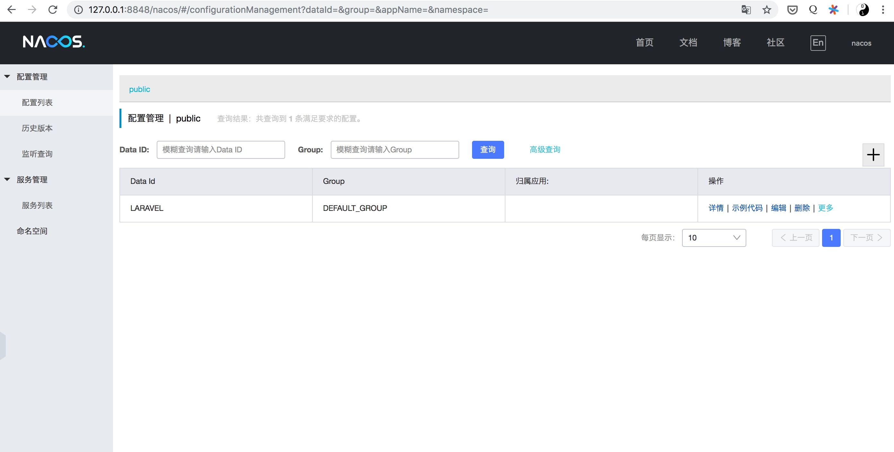
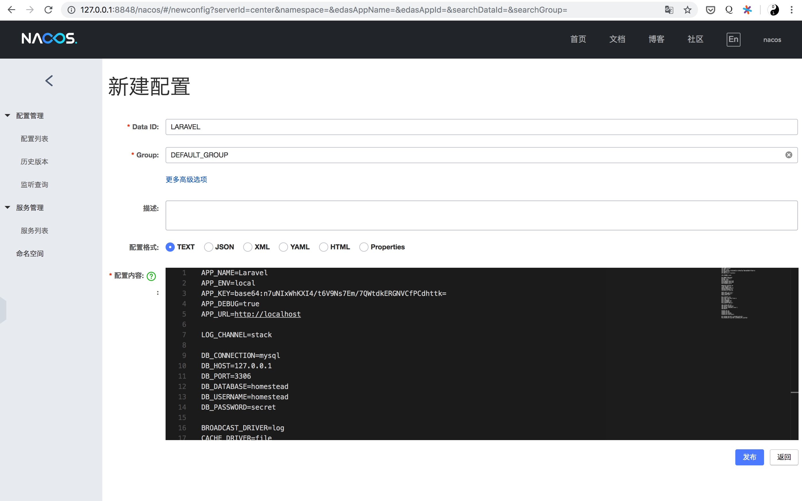
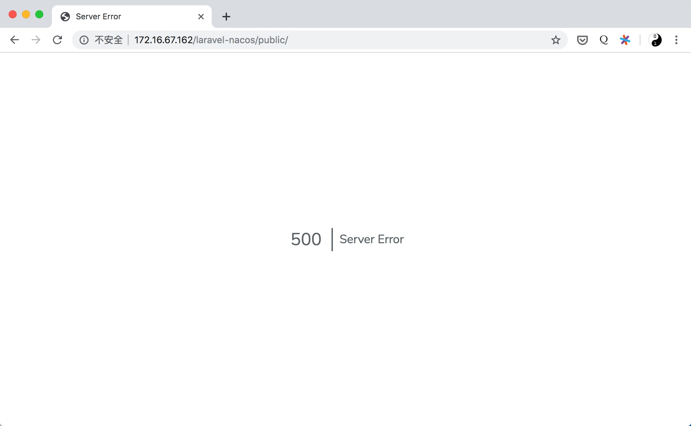
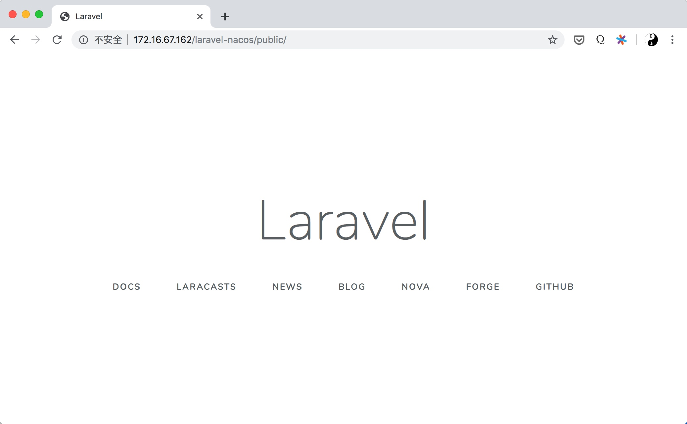

php微服务的资料一直比java少，不过java微服务的一些组件php也是可以复用的，就拿配置中心这个组件举例，来看看在php里如何使用😀
配置中心作为微服务不可缺少的关键组件，下面就在laravel中集成配置中心nacos
nacos是由阿里巴巴开发的微服务配置中心，参考：nacos
下面用到了由作者写的php的nacos客户端php-nacos: https://github.com/neatlife/php-nacos
欢迎star，欢迎pr(求star, 求star, 求star)
启动nacos配置中心
可以使用docker启动
git clone https://github.com/nacos-group/nacos-docker.git
cd nacos-docker
docker-compose -f example/standalone-derby.yaml up
然后打开 本机ip:8848端口查看效果，nacos默认的登录用户名密码都是 nacos

然后点击+号，新建配置，把laravel的.env文件内容复制进去，dataid一般是应用的名称，一般可以填应用名称，获取配置的时候会用到这个参数

先删掉项目里的.env文件，后面从配置中心获取配置，删掉后查看效果

项目报500了，这个是预期内的效果
下载php-nacos客户端
可以使用composer一键下载:
composer require alibaba/nacos
将nacos配置中心的配置写入环境变量
编辑 /etc/environment 文件，核心内容如下
LARAVEL_NACOS_HOST=你的nacos配置中心地址和端口，比如http://127.0.0.1:8848
LARAVEL_ENV=app运行的环境，比如: dev, local等
LARAVEL_NACOS_DATAID=配置的dataid
LARAVEL_NACOS_GROUPID=配置的groupid
将环境变量传递给php-fpm
修改文件：/usr/lib/systemd/system/php-fpm.service
在[Service]节下添加：EnvironmentFile=/etc/environment
修改php-fpm配置文件，比如：/usr/local/php/etc/php-fpm.conf
在[www]节下添加：clear_env = no
然后重新加载php-fpm服务，命令如下：
systemctl daemon-reload
systemctl stop php-fpm
systemctl start php-fpm
使用nacos配置中心的配置替代laravel的.env文件
在laravel项目里把.env文件删掉，然后修改bootstrap/app.php文件，在文件开头添加获取nacos配置中心配置文件的代码，核心代码如下
\alibaba\nacos\NacosConfig::setSnapshotPath(dirname(__DIR__) . "/nacos/config");
(new \Dotenv\Loader([], new \Dotenv\Environment\DotenvFactory(), true))->loadDirect(
\alibaba\nacos\failover\LocalConfigInfoProcessor::getSnapshot(
getenv("LARAVEL_ENV"),
getenv("LARAVEL_NACOS_DATAID"),
getenv("LARAVEL_NACOS_GROUPID"),
getenv("LARAVEL_NACOS_NAMESPACEID") ? : "",
)
);
完整代码参考app.php
定时获取最新的配置
在laravel里创建一个命令: artisan make:command NacosRefreshConfig
然后编辑刚刚创建的文件，在命令执行体里获取配置文件，核心代码如下：
// load nacos config file
(new \Dotenv\Loader([], new \Dotenv\Environment\DotenvFactory(), true))->loadDirect(
\alibaba\nacos\Nacos::init(
getenv("LARAVEL_NACOS_HOST"),
getenv("LARAVEL_ENV"),
getenv("LARAVEL_NACOS_DATAID"),
getenv("LARAVEL_NACOS_GROUPID"),
getenv("LARAVEL_NACOS_NAMESPACEID") ? : "",
)->runOnce()
);
完整代码参考NacosRefreshConfig.php
创建一个linux的cron执行上面的命令，比如每分钟的第一秒获取配置文件
1 */1 * * * php path/to/artisan nacos:refresh
为了可以马上看到效果，可以手动执行下这个命令
php artisan nacos:refresh
这个定时任务执行后，项目需要的配置文件就被拉取到 nacos目录了，打开浏览器查看效果

可以看到项目已经成功获取到配置文件并开始正常运行了
一些注意的点
微服务除了配置中心，另外非常重要的还有熔断降级和链路追踪
熔断降级可以使用istio来做，参考istio的熔断
链路追踪可以使用SkyWalking或者pinpoint来做，当然也可以使用istio也提供的链路追踪功能，参考：分布式追踪
可以使用nacos和mysql集成的docker保存配置，参考：standalone-mysql.yaml
可以将laravel应用打成docker镜像在kubernetes上运行，搭建kubernetes集群可以参考作者写的另一篇博客：安装k8s集群
完整案例代码已上传github：https://github.com/neatlife/laravel-nacos
如果对微服务开发感兴趣，可加作者微信探讨，也可在github提pr，issue等